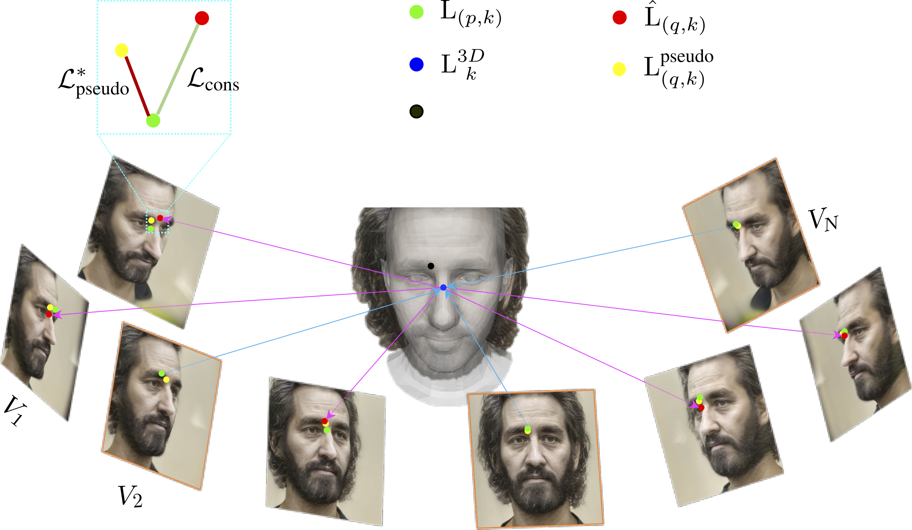
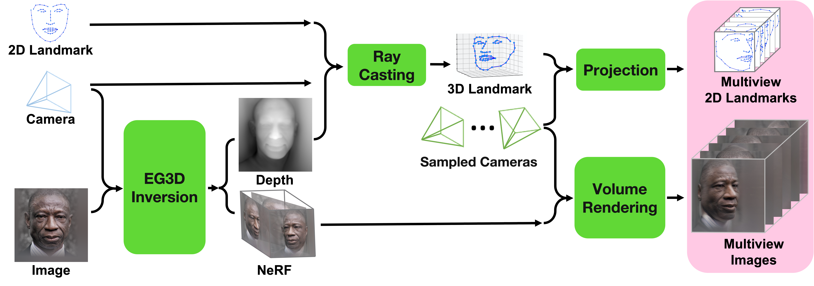

3D-aware Facial Landmark Detection via Multiview Consistent Training on Synthetic Data
The IEEE Conference on Computer Vision and Pattern Recognition (CVPR 2023)
-
Libing Zeng
Texas A&M University -
Lele Chen
OPPO US Research Center -
Wentao Bao
Michigan State University -
Zhong Li
OPPO US Research Center -
Yi Xu
OPPO US Research Center -
Junsong Yuan
University at Buffalo -
Nima Khademi Kalantari
Texas A&M University


Abstract
Accurate facial landmark detection on wild images plays essential role for human-computer interaction, entertainment, and medical applications. Existing approaches are limited by the in-the-wild data and fail to enforce 3D consistency when detecting 3D/2D facial landmarks. On the other hand, with recent advances in generative visual models and neural rendering, we have witnessed rapid progress towards high quality 3D image synthesis. In this work, by leveraging synthetic data, we propose a novel multi-view consistent learning strategy to improve 3D facial landmark detection accuracy on in-the-wild images. The proposed 3D-aware module can be plugged into any learning-based landmark detection algorithm. We demonstrate the superiority of the proposed plug-in module with extensive comparison against state-of-the-art methods on several real and synthetic datasets.
Talk
Dataset
We synthesize multiview images with geometrical consistency landmarks using single in-the-wild image and its annotated landmark.
Results

The visual results of Dlib, FAN, 3DDFA, our refined 3DDFA+, 3DDFA-V2, DAD-3DNet, and our refined DAD-3DNet on images randomly sampled from DAD-3DHeads testing set. We show the enlarged error region (while box) in the middle row.
Supplementary Video
BibTeX
@article{Zeng_2023_landmark,
author = {Zeng, Libing and Chen, Lele and Bao, Wentao and Li, Zhong and Xu, Yi and Yuan, Junsong and Kalantari, Nima Khademi},
title = {3D-aware Facial Landmark Detection via Multiview Consistent Training on Synthetic Data},
booktitle={Proceedings of the IEEE conference on computer vision and pattern recognition},
year={2023}
}
Acknowledgements
We thank the reviewers for their insightful comments. The website template was borrowed from Michael Gharbi.